01スタッフ
写真とひと言で、
1分で報告できる。
LINEでメッセージを送るのと同じ感覚で、写真を撮って、ひと言書くだけ。日報のひな形があるから、何を書けばいいか迷いません。現場の写真や動画も、その場で撮ってそのまま添付できます。
- 日報のひな形を会社ごとに設定
- 写真・動画をその場で添付
- 「日報」「つぶやき」「サンクスカード」を選んで投稿
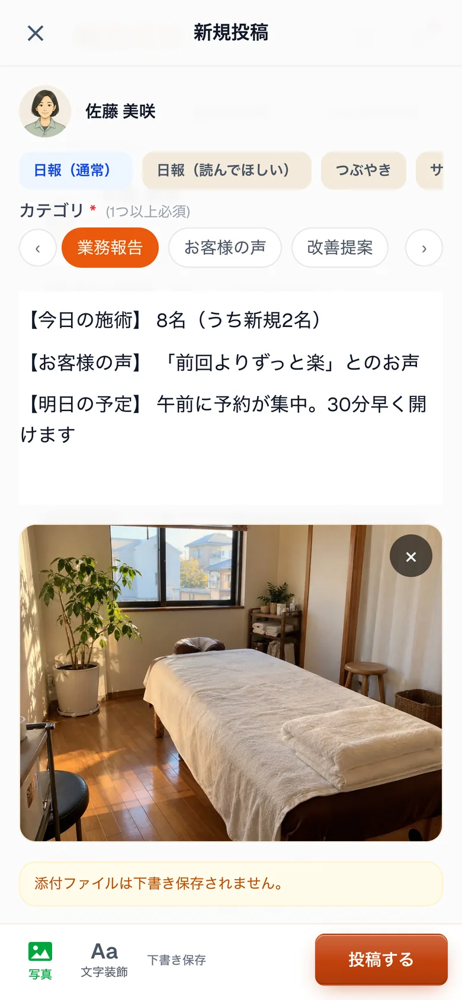
グループLINEの“次”の業務連絡アプリ
報告も、お知らせも、お願いも。
仕事の話がトークに流れず、ちゃんと残る。
スタッフは自分のスマホに入れるだけで使えます。
「画面を見てみたい」だけでもOK。
しつこい営業はしません。
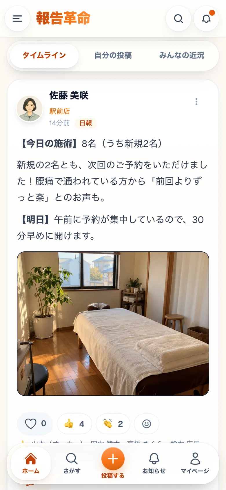
現場のある会社で、使われています
ハウスクリーニング事業者での実績（2026年9月時点）
こんなこと、ありませんか？
かといって、
SlackやChatworkは、うちの現場には
ちょっと大げさ。
パソコンを持たないスタッフに、チャンネルやスレッドの使い分けから覚えてもらうのは大変です。
欲しいのは、LINEと同じくらい手軽で、仕事の話だけがきちんと整理される場所のはずです。
LINE以上、Slack・Chatwork未満。
LINE
手軽。でも、仕事の話が流れていく
報告革命
LINEの手軽さで、仕事の話が整理される
Slack・Chatwork
多機能。でも、現場には覚えることが多い
スタッフが7名を超えて、グループLINEがあふれてきた。でも、みんなパソコンは持たず自分のスマホだけ。
そんな会社にちょうどいい、“真ん中”の道具です。
導入のタイミング
ひとりの人が直接目を配り、声をかけられるのは7人くらいまでと言われます。
それを超えると、社長や店長ひとりでは全員に目が届かず、無理がかかります。
〜7名
全員の顔と仕事が見えて、その場で声をかけられる。グループLINEでも、なんとか回ります。
ここが導入のタイミング
8〜30名
報告がトークに流れ、返事が追いつかない。「言った・言わない」が増えはじめます。報告とやりとりの“仕組み”が必要になるころです。
31〜100名
店舗や部署ごとに責任者を置き、報告やお知らせを必要な人に届ける。仕組みがあるほど、人が増えても回ります。
スタッフが7名を超えたら、報告とやりとりの“仕組み”を入れるタイミングです。
グループLINEでやっていたことは
グループLINEだと
雑談やスタンプにまぎれて、流れていく
報告革命なら
タイムライン
写真つきで積み上がり、あとから検索できる。スタンプひとつで「見てるよ」を返せる
グループLINEだと
既読の数だけで、だれが読んだのかわからない
報告革命なら
掲示板
読んだ人が「確認しました」を押すので、まだの人が名前でわかる
グループLINEだと
頼んだことが、終わったのかどうかわからない
報告革命なら
タスク
期限をつけて頼めて、終わったら「完了」になる。言った・言わないがなくなる
グループLINEだと
スタッフと個人のLINEを交換しないといけない
報告革命なら
DM
仕事用のアカウント同士で話せるから、個人の連絡先を教え合わなくていい
LINEの手軽さはそのままに、
仕事のやりとりだけを引っ越す。
LINEはプライベートに。
仕事は報告革命に。
できること
01スタッフ
LINEでメッセージを送るのと同じ感覚で、写真を撮って、ひと言書くだけ。日報のひな形があるから、何を書けばいいか迷いません。現場の写真や動画も、その場で撮ってそのまま添付できます。

02経営者
各店舗・各現場の報告が、写真つきで時系列に並びます。雑談やスタンプにまぎれないから、移動中でもスマホでさっと確認。「あの日の報告」も、キーワードですぐに見つかります。
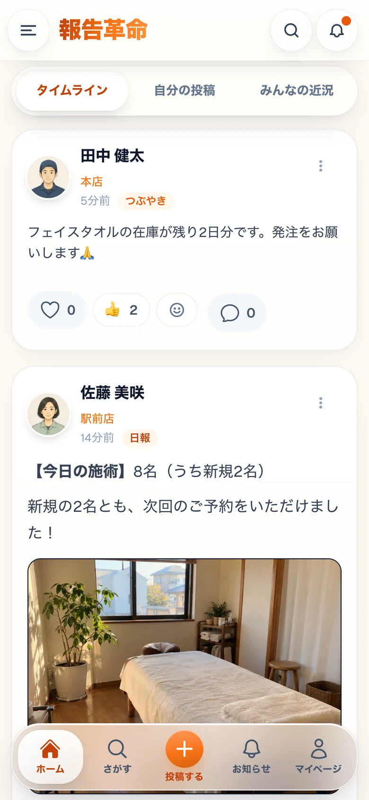
03返事
忙しいときは、スタンプをタップするだけ。報告に反応が返ってくるから、スタッフは「ちゃんと見てもらえている」と感じ、次も報告したくなります。報告が増えるほど、現場はもっと見えるようになります。
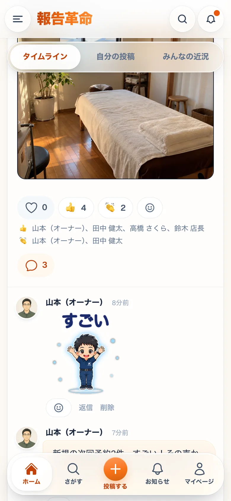
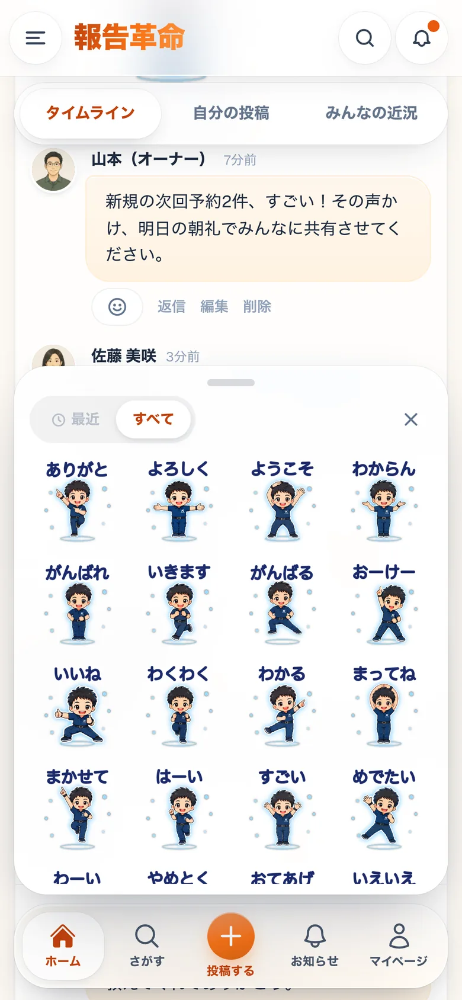
04見える化
投稿数やもらったメダル、サンクスカードの数は、ランキングで確認できます。よく報告してくれるスタッフに気づけて、頑張りをきちんと評価できます。
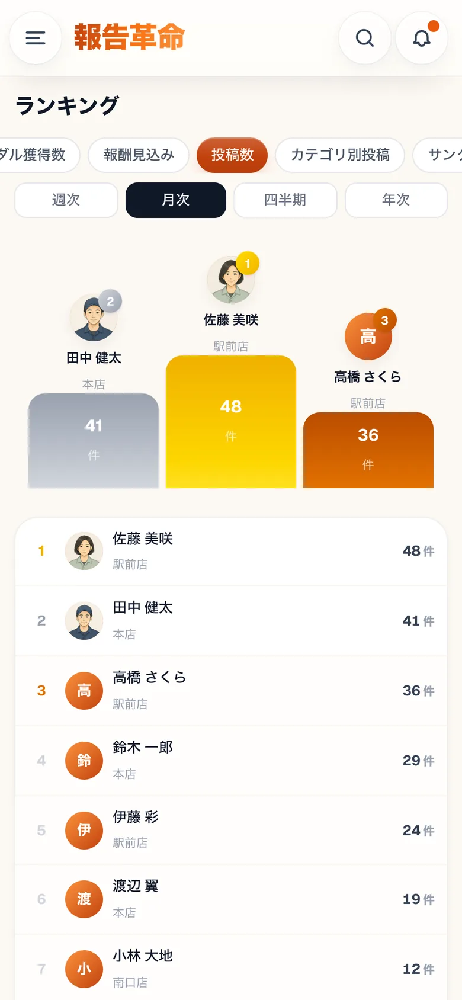
画面はすべて架空のデータを使った表示例です。
動画で見る
株式会社AXのYouTubeで、報告革命を使っている様子が紹介されました。
18:54〜25:26 が報告革命の場面です。再生すると、その場面から始まります。
グループLINEを卒業すると
個人のLINEに仕事の連絡が混ざらないから、スタッフも経営者も、プライベートの時間を守りやすくなります。
報告・お知らせ・お願いを分けて残せるから、見落としや「言った・言わない」が減ります。
写真つきの報告が積み上がり、キーワードで探せます。「あの日どうだった？」にも、新しいスタッフへの引き継ぎにも。
スタンプやサンクスカードで、工夫や気配りに「ありがとう」を返せる。認められる職場づくりにつながります。
業種別の使い方
整体・サロン・美容室から、ハウスクリーニング、リペア、飲食店まで。
パソコンを持たないスタッフが多い業種ほど、報告革命が役に立ちます。
整体・マッサージ
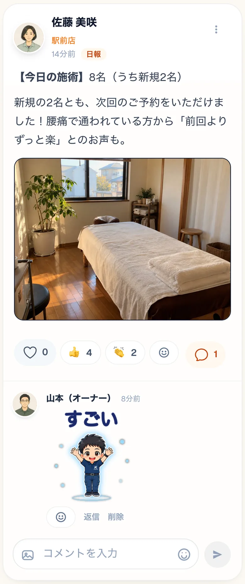
ネイルサロン
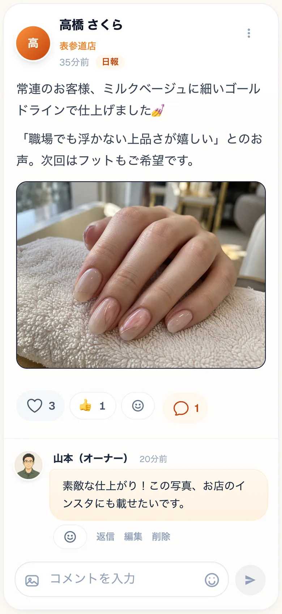
美容室
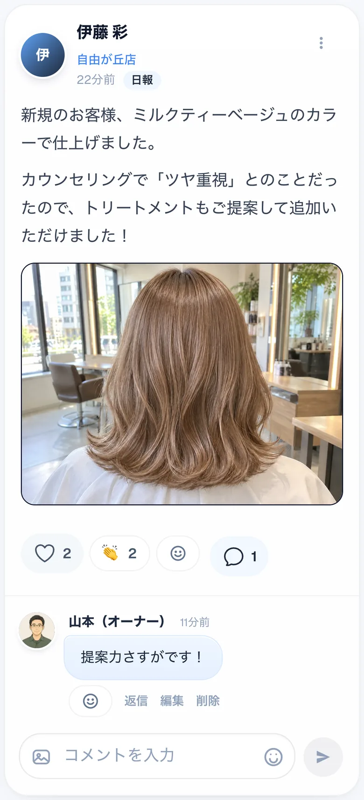
ハウスクリーニング
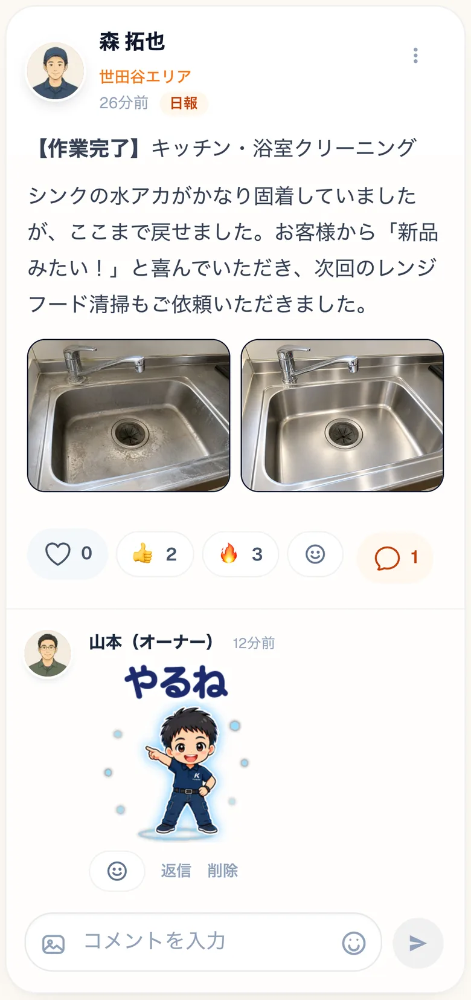
リペア
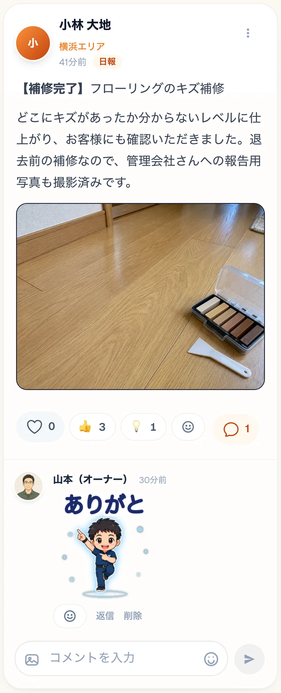
飲食店
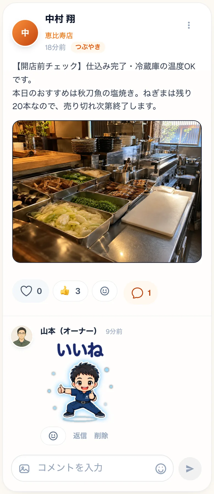
画面はすべて架空のデータを使った表示例です。
iPhone・Androidアプリ
スタッフ一人ひとりにパソコンがなくても大丈夫。いつも使っている自分のスマホに、アプリを入れるだけ。LINEが使えれば、すぐに使いこなせます。
ご利用には、導入企業から発行されるアカウントが必要です。導入のご相談はLINEからどうぞ。
料金
1アカウントあたり
月額550円
税込・1日あたり約18円
初期費用・契約条件は、LINEでお気軽にお問い合わせください。
はじめ方
「画面を見てみたい」「料金を知りたい」など、ひと言メッセージを送ってください。
無料のオンラインデモ（30分）で、いまのLINEの使い方に合わせた移し方をご紹介します。
招待メールを送るだけ。最初の投稿・返事の仕方まで、立ち上げをサポートします。個人のLINEの交換はいりません。
よくあるご質問
LINEは、プライベートの連絡も仕事の連絡も同じトークに流れていきます。報告革命は仕事専用で、報告はタイムライン、全員へのお知らせは掲示板、お願いはタスク、と用途ごとに分けて残せます。だれが確認したか、お願いが終わったかもわかります。
SlackやChatworkは、多くの機能をそなえたビジネスチャットです。報告革命は、パソコンを持たないスタッフが自分のスマホで使うことを前提に、「写真とひと言で報告する」「お知らせを確認する」「お願いする」に絞っています。覚えることが少ないので、LINEが使える方ならすぐに使えます。
はい。投稿・確認・返事まで、すべてスマホだけで使えます。iPhone・Androidのアプリがあり、パソコンのブラウザからも利用できます。
写真を撮って、ひと言書いて、投稿するだけです。日報のひな形も用意できるので、書くことに迷いません。LINEを使えている方なら、すぐに慣れていただけます。
はい。仕事用のアカウントで使うので、個人のLINEや電話番号を交換する必要はありません。プライベートと仕事の連絡を分けられます。
いいえ。まずは日報や報告だけを報告革命に移し、慣れてきたらお知らせやお願いも移す、という進め方もできます。どこから移すかもご相談ください。
スタッフが7名を超えたころが、導入のタイミングです。ひとりで目を配れるのは7人くらいまでと言われ、それを超えると、グループLINEだけでは報告や連絡が回らなくなりがちです。20〜30名ほど、100名以下の会社を想定しています。いまは5名から22名の会社でご利用いただいています（2026年9月時点）。料金は使う人数分だけなので、少人数でも始めやすくなっています。
使えます。短い投稿でも参加できるので、雇用形態を問わず、現場の気づきや感謝を共有できます。
しつこい営業は行いません。「まず画面だけ見たい」「料金だけ知りたい」といったご相談も歓迎です。
お問い合わせ
お問い合わせは、いつものLINEからどうぞ。
「画面を見たい」と送るだけで、御社の人数やいまの使い方に合わせてご案内します。
ご相談・デモは無料です。しつこい営業はしません。
パソコンでご覧の方は
スマホで読み取ってください